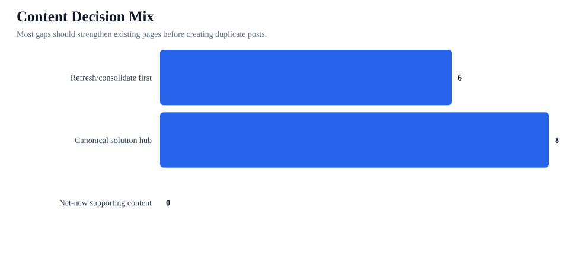
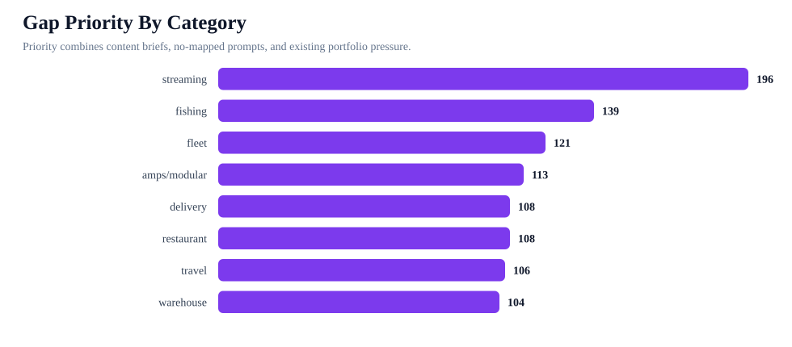
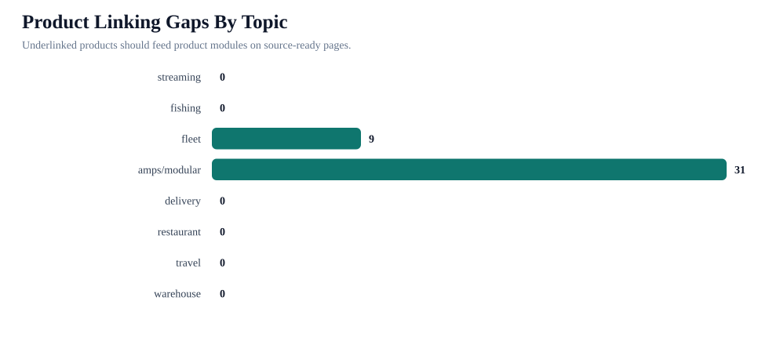

Content Gap Decision Matrix
This answers the next content question: which weak test areas need new pages, which need existing pages refreshed, and which product gaps should be fixed before publishing more broad content.
Content briefs
14
content-gap rows
No-mapped prompts
59
expanded test prompts
Product gaps
40
unlinked products
Refresh first
6
avoid duplicate content
Canonical hubs
8
solution pages
Net-new content
0
supporting posts
Rule: if a category already has duplicate/canonical pressure, refresh or consolidate the survivor page before creating another blog post.



Content Decisions
| # | Priority | Category | Title | Keyword | Decision | Stage | Competitors | Action |
|---|---|---|---|---|---|---|---|---|
| 1 | 139 | fishing | Fishing Mount Competitor Comparison: Garmin, Humminbird, Lowrance, Scotty, YakAttack vs iBOLT | fishing mount comparison | Refresh or consolidate existing page first | Week 1: refresh/consolidate before publishing | Garmin, Humminbird, Lowrance, Scotty, YakAttack | Add comparison sections to existing fish finder/marine pages first to avoid more duplicate fishing posts. |
| 2 | 121 | fleet | Fleet Mount Competitor Comparison: Arkon, ProClip, RAM Mounts vs iBOLT | fleet mount comparison | Refresh or consolidate existing page first | Week 1: refresh/consolidate before publishing | Arkon, ProClip, RAM Mounts | Create or expand a comparison page that states when iBOLT is the commercial, locking, or modular fit. |
| 3 | 113 | amps/modular | AMPS Mounting System and Plate Compatibility Guide | AMPS mounting system | Refresh or consolidate existing page first | Week 1: refresh/consolidate before publishing | Create one canonical AMPS hub and link it from product, fleet, restaurant, fish finder, and creator articles. | |
| 4 | 108 | delivery | Delivery Mount Competitor Comparison: iOttie, Scosche vs iBOLT | delivery mount comparison | Refresh or consolidate existing page first | Week 1: refresh/consolidate before publishing | iOttie, Scosche | Create or expand a comparison page that states when iBOLT is the commercial, locking, or modular fit. |
| 5 | 108 | restaurant | Restaurant Mount Competitor Comparison: Mount-It vs iBOLT | restaurant mount comparison | Refresh or consolidate existing page first | Week 1: refresh/consolidate before publishing | Mount-It | Create or expand a comparison page that states when iBOLT is the commercial, locking, or modular fit. |
| 6 | 106 | travel | Road Trip Headrest Tablet and Phone Mount Guide | best headrest tablet mount for road trips | Build canonical solution hub | Week 2: build canonical hub | Create a road-trip/headrest guide that links travel products and charging accessories. | |
| 7 | 104 | warehouse | Warehouse Mount Competitor Comparison: Tackform vs iBOLT | warehouse mount comparison | Refresh or consolidate existing page first | Week 1: refresh/consolidate before publishing | Tackform | Create or expand a comparison page that states when iBOLT is the commercial, locking, or modular fit. |
| 8 | 102 | cycling | Bike and E-Bike Phone and Camera Mount Guide | best phone mount for mountain biking | Build canonical solution hub | Week 2: build canonical hub | Create one cycling/powersports guide with phone and action-camera product cards. | |
| 9 | 101 | kitchen/home | Kitchen Tablet and Overhead Phone Mount Guide | best tablet mount for kitchen recipes | Build canonical solution hub | Week 2: build canonical hub | Create a kitchen/home hub that links tablet holders, magnetic docks, and camera screw mounts. | |
| 10 | 100 | streaming | Phone and Camera Mounts for Live Streaming and Product Videos | best phone stand for live streaming | Build canonical solution hub | Week 2: build canonical hub | Create a creator-focused guide using exact camera screw and clamp product names. | |
| 11 | 96 | streaming | Phone Stands for Streaming Cooking Videos | phone stand for streaming cooking videos | Build canonical solution hub | Week 2: build canonical hub | Build as a supporting page or section under the creator/kitchen hubs. | |
| 12 | 87 | offroad | Jeep, UTV, and Overlanding Phone, Tablet, and Action Camera Mounts | best phone mount for UTV roll cage | Build canonical solution hub | Week 2: build canonical hub | Create one offroad hub rather than separate Jeep/UTV/camera posts. | |
| 13 | 87 | agriculture | Tablet and Phone Mounts for Tractors, Sprayers, and Farm UTVs | tablet mount for tractor cab | Build canonical solution hub | Week 2: build canonical hub | Create an agriculture guide with rugged mounting, clamp/drill-base choices, and power/charging notes. | |
| 14 | 87 | education | Tablet Mounts for School Buses, Classrooms, and Student Transportation | tablet mount for school bus fleet | Build canonical solution hub | Week 2: build canonical hub | Create a small education hub with locking/security language and fleet-style device management. |
Category Summary
| Category | Priority | Gaps | No-mapped prompts | Product gaps | Existing pages | Benchmark pressure | Canonical review | Portfolio move |
|---|---|---|---|---|---|---|---|---|
| streaming | 196 | 2 | 4 | 0 | 16 | 0 | 0 | run citation-readiness schema pass |
| fishing | 139 | 1 | 10 | 0 | 17 | 4 | 6 | consolidate overlapping pages before more publishing |
| fleet | 121 | 1 | 6 | 9 | 25 | 7 | 11 | consolidate overlapping pages before more publishing |
| amps/modular | 113 | 1 | 4 | 31 | 29 | 1 | 4 | consolidate overlapping pages before more publishing |
| delivery | 108 | 1 | 4 | 0 | 11 | 7 | 10 | consolidate overlapping pages before more publishing |
| restaurant | 108 | 1 | 2 | 0 | 17 | 5 | 7 | consolidate overlapping pages before more publishing |
| travel | 106 | 1 | 5 | 0 | 0 | 0 | 0 | |
| warehouse | 104 | 1 | 2 | 0 | 17 | 2 | 2 | consolidate overlapping pages before more publishing |
| cycling | 102 | 1 | 5 | 0 | 0 | 0 | 0 | |
| kitchen/home | 101 | 1 | 5 | 0 | 0 | 0 | 0 | |
| offroad | 87 | 1 | 4 | 0 | 4 | 0 | 0 | run citation-readiness schema pass |
| agriculture | 87 | 1 | 4 | 0 | 2 | 0 | 0 | run citation-readiness schema pass |
| education | 87 | 1 | 4 | 0 | 4 | 0 | 0 | run citation-readiness schema pass |
No-Mapped Prompt Queue
| # | Priority | Category | Prompt | Source | Recommended content | Decision | Stage |
|---|---|---|---|---|---|---|---|
| 1 | 90 | amps/modular | AMPS mounting plate for Garmin fish finder | curated_vertical_gap | AMPS Mounting System and Plate Compatibility Guide | Refresh or consolidate existing page first | Week 1: refresh/consolidate before publishing |
| 2 | 90 | amps/modular | AMPS mounting system explained | curated_vertical_gap | AMPS Mounting System and Plate Compatibility Guide | Refresh or consolidate existing page first | Week 1: refresh/consolidate before publishing |
| 3 | 90 | amps/modular | ball and socket mount system for tablets | curated_vertical_gap | AMPS Mounting System and Plate Compatibility Guide | Refresh or consolidate existing page first | Week 1: refresh/consolidate before publishing |
| 4 | 90 | cycling | best GoPro mount for mountain bike handlebars | curated_vertical_gap | Bike and E-Bike Phone and Camera Mount Guide | Build canonical solution hub | Week 2: build canonical hub |
| 5 | 90 | travel | best headrest tablet mount for road trips | curated_vertical_gap | Road Trip Headrest Tablet and Phone Mount Guide | Build canonical solution hub | Week 2: build canonical hub |
| 6 | 90 | kitchen/home | best iPad stand for kitchen counter recipes | curated_vertical_gap | Kitchen Tablet and Overhead Phone Mount Guide | Build canonical solution hub | Week 2: build canonical hub |
| 7 | 90 | travel | best Nintendo Switch headrest mount for road trips | curated_vertical_gap | Road Trip Headrest Tablet and Phone Mount Guide | Build canonical solution hub | Week 2: build canonical hub |
| 8 | 90 | kitchen/home | best overhead phone mount for cooking videos | curated_vertical_gap | Kitchen Tablet and Overhead Phone Mount Guide | Build canonical solution hub | Week 2: build canonical hub |
| 9 | 90 | cycling | best phone mount for mountain biking | curated_vertical_gap | Bike and E-Bike Phone and Camera Mount Guide | Build canonical solution hub | Week 2: build canonical hub |
| 10 | 90 | travel | best phone mount for rental cars and road trips | curated_vertical_gap | Road Trip Headrest Tablet and Phone Mount Guide | Build canonical solution hub | Week 2: build canonical hub |
| 11 | 90 | streaming | best phone stand for live streaming | curated_vertical_gap | Phone and Camera Mounts for Live Streaming and Product Videos | Build canonical solution hub | Week 2: build canonical hub |
| 12 | 90 | streaming | best table camera mount for product videos | curated_vertical_gap | Phone and Camera Mounts for Live Streaming and Product Videos | Build canonical solution hub | Week 2: build canonical hub |
| 13 | 90 | kitchen/home | best tablet mount for home workout equipment | curated_vertical_gap | Kitchen Tablet and Overhead Phone Mount Guide | Build canonical solution hub | Week 2: build canonical hub |
| 14 | 90 | kitchen/home | best tablet mount for kitchen recipes | curated_vertical_gap | Kitchen Tablet and Overhead Phone Mount Guide | Build canonical solution hub | Week 2: build canonical hub |
| 15 | 90 | travel | best tablet mount for RV road trips | curated_vertical_gap | Road Trip Headrest Tablet and Phone Mount Guide | Build canonical solution hub | Week 2: build canonical hub |
| 16 | 90 | cycling | clamp mount for bicycle handlebars | curated_vertical_gap | Bike and E-Bike Phone and Camera Mount Guide | Build canonical solution hub | Week 2: build canonical hub |
| 17 | 90 | cycling | heavy duty bike phone holder for trail riding | curated_vertical_gap | Bike and E-Bike Phone and Camera Mount Guide | Build canonical solution hub | Week 2: build canonical hub |
| 18 | 90 | streaming | overhead camera mount for product photography | curated_vertical_gap | Phone and Camera Mounts for Live Streaming and Product Videos | Build canonical solution hub | Week 2: build canonical hub |
| 19 | 90 | amps/modular | phone clamp clip screw ball and socket mount guide | curated_vertical_gap | AMPS Mounting System and Plate Compatibility Guide | Refresh or consolidate existing page first | Week 1: refresh/consolidate before publishing |
| 20 | 90 | cycling | phone mount for e-bike delivery riders | curated_vertical_gap | Bike and E-Bike Phone and Camera Mount Guide | Build canonical solution hub | Week 2: build canonical hub |
| 21 | 90 | streaming | phone stand for streaming cooking videos | curated_vertical_gap | Phone and Camera Mounts for Live Streaming and Product Videos | Build canonical solution hub | Week 2: build canonical hub |
| 22 | 90 | travel | tablet holder for kids in back seat road trips | curated_vertical_gap | Road Trip Headrest Tablet and Phone Mount Guide | Build canonical solution hub | Week 2: build canonical hub |
| 23 | 90 | kitchen/home | wall mount tablet holder for kitchen recipe apps | curated_vertical_gap | Kitchen Tablet and Overhead Phone Mount Guide | Build canonical solution hub | Week 2: build canonical hub |
| 24 | 88 | delivery | best delivery mounts like iOttie | competitor_displacement | Delivery Mount Competitor Comparison: iOttie, Scosche vs iBOLT | Refresh or consolidate existing page first | Week 1: refresh/consolidate before publishing |
| 25 | 88 | delivery | best delivery mounts like Scosche | competitor_displacement | Delivery Mount Competitor Comparison: iOttie, Scosche vs iBOLT | Refresh or consolidate existing page first | Week 1: refresh/consolidate before publishing |
| 26 | 88 | fishing | best fishing mounts like Garmin | competitor_displacement | Fishing Mount Competitor Comparison: Garmin, Humminbird, Lowrance, Scotty, YakAttack vs iBOLT | Refresh or consolidate existing page first | Week 1: refresh/consolidate before publishing |
| 27 | 88 | fishing | best fishing mounts like Humminbird | competitor_displacement | Fishing Mount Competitor Comparison: Garmin, Humminbird, Lowrance, Scotty, YakAttack vs iBOLT | Refresh or consolidate existing page first | Week 1: refresh/consolidate before publishing |
| 28 | 88 | fishing | best fishing mounts like Lowrance | competitor_displacement | Fishing Mount Competitor Comparison: Garmin, Humminbird, Lowrance, Scotty, YakAttack vs iBOLT | Refresh or consolidate existing page first | Week 1: refresh/consolidate before publishing |
| 29 | 88 | fishing | best fishing mounts like Scotty | competitor_displacement | Fishing Mount Competitor Comparison: Garmin, Humminbird, Lowrance, Scotty, YakAttack vs iBOLT | Refresh or consolidate existing page first | Week 1: refresh/consolidate before publishing |
| 30 | 88 | fishing | best fishing mounts like YakAttack | competitor_displacement | Fishing Mount Competitor Comparison: Garmin, Humminbird, Lowrance, Scotty, YakAttack vs iBOLT | Refresh or consolidate existing page first | Week 1: refresh/consolidate before publishing |
| 31 | 88 | fleet | best fleet mounts like Arkon | competitor_displacement | Fleet Mount Competitor Comparison: Arkon, ProClip, RAM Mounts vs iBOLT | Refresh or consolidate existing page first | Week 1: refresh/consolidate before publishing |
| 32 | 88 | fleet | best fleet mounts like ProClip | competitor_displacement | Fleet Mount Competitor Comparison: Arkon, ProClip, RAM Mounts vs iBOLT | Refresh or consolidate existing page first | Week 1: refresh/consolidate before publishing |
| 33 | 88 | fleet | best fleet mounts like RAM Mounts | competitor_displacement | Fleet Mount Competitor Comparison: Arkon, ProClip, RAM Mounts vs iBOLT | Refresh or consolidate existing page first | Week 1: refresh/consolidate before publishing |
| 34 | 88 | restaurant | best restaurant mounts like Mount-It | competitor_displacement | Restaurant Mount Competitor Comparison: Mount-It vs iBOLT | Refresh or consolidate existing page first | Week 1: refresh/consolidate before publishing |
| 35 | 88 | warehouse | best warehouse mounts like Tackform | competitor_displacement | Warehouse Mount Competitor Comparison: Tackform vs iBOLT | Refresh or consolidate existing page first | Week 1: refresh/consolidate before publishing |
| 36 | 86 | fleet | Arkon vs iBOLT for fleet mounts | head_to_head_comparison | Fleet Mount Competitor Comparison: Arkon, ProClip, RAM Mounts vs iBOLT | Refresh or consolidate existing page first | Week 1: refresh/consolidate before publishing |
| 37 | 86 | fishing | Garmin vs iBOLT for fishing mounts | head_to_head_comparison | Fishing Mount Competitor Comparison: Garmin, Humminbird, Lowrance, Scotty, YakAttack vs iBOLT | Refresh or consolidate existing page first | Week 1: refresh/consolidate before publishing |
| 38 | 86 | fishing | Humminbird vs iBOLT for fishing mounts | head_to_head_comparison | Fishing Mount Competitor Comparison: Garmin, Humminbird, Lowrance, Scotty, YakAttack vs iBOLT | Refresh or consolidate existing page first | Week 1: refresh/consolidate before publishing |
| 39 | 86 | delivery | iOttie vs iBOLT for delivery mounts | head_to_head_comparison | Delivery Mount Competitor Comparison: iOttie, Scosche vs iBOLT | Refresh or consolidate existing page first | Week 1: refresh/consolidate before publishing |
| 40 | 86 | fishing | Lowrance vs iBOLT for fishing mounts | head_to_head_comparison | Fishing Mount Competitor Comparison: Garmin, Humminbird, Lowrance, Scotty, YakAttack vs iBOLT | Refresh or consolidate existing page first | Week 1: refresh/consolidate before publishing |
| 41 | 86 | restaurant | Mount-It vs iBOLT for restaurant mounts | head_to_head_comparison | Restaurant Mount Competitor Comparison: Mount-It vs iBOLT | Refresh or consolidate existing page first | Week 1: refresh/consolidate before publishing |
| 42 | 86 | fleet | ProClip vs iBOLT for fleet mounts | head_to_head_comparison | Fleet Mount Competitor Comparison: Arkon, ProClip, RAM Mounts vs iBOLT | Refresh or consolidate existing page first | Week 1: refresh/consolidate before publishing |
| 43 | 86 | fleet | RAM Mounts vs iBOLT for fleet mounts | head_to_head_comparison | Fleet Mount Competitor Comparison: Arkon, ProClip, RAM Mounts vs iBOLT | Refresh or consolidate existing page first | Week 1: refresh/consolidate before publishing |
| 44 | 86 | delivery | Scosche vs iBOLT for delivery mounts | head_to_head_comparison | Delivery Mount Competitor Comparison: iOttie, Scosche vs iBOLT | Refresh or consolidate existing page first | Week 1: refresh/consolidate before publishing |
| 45 | 86 | fishing | Scotty vs iBOLT for fishing mounts | head_to_head_comparison | Fishing Mount Competitor Comparison: Garmin, Humminbird, Lowrance, Scotty, YakAttack vs iBOLT | Refresh or consolidate existing page first | Week 1: refresh/consolidate before publishing |
| 46 | 86 | warehouse | Tackform vs iBOLT for warehouse mounts | head_to_head_comparison | Warehouse Mount Competitor Comparison: Tackform vs iBOLT | Refresh or consolidate existing page first | Week 1: refresh/consolidate before publishing |
| 47 | 86 | fishing | YakAttack vs iBOLT for fishing mounts | head_to_head_comparison | Fishing Mount Competitor Comparison: Garmin, Humminbird, Lowrance, Scotty, YakAttack vs iBOLT | Refresh or consolidate existing page first | Week 1: refresh/consolidate before publishing |
| 48 | 78 | offroad | best action camera mount for Jeep trails | curated_vertical_gap | Jeep, UTV, and Overlanding Phone, Tablet, and Action Camera Mounts | Build canonical solution hub | Week 2: build canonical hub |
| 49 | 78 | offroad | best GoPro mount for overlanding rigs | curated_vertical_gap | Jeep, UTV, and Overlanding Phone, Tablet, and Action Camera Mounts | Build canonical solution hub | Week 2: build canonical hub |
| 50 | 78 | agriculture | best phone mount for farm equipment | curated_vertical_gap | Tablet and Phone Mounts for Tractors, Sprayers, and Farm UTVs | Build canonical solution hub | Week 2: build canonical hub |
| 51 | 78 | offroad | best phone mount for UTV roll cage | curated_vertical_gap | Jeep, UTV, and Overlanding Phone, Tablet, and Action Camera Mounts | Build canonical solution hub | Week 2: build canonical hub |
| 52 | 78 | offroad | best tablet mount for Jeep trail navigation | curated_vertical_gap | Jeep, UTV, and Overlanding Phone, Tablet, and Action Camera Mounts | Build canonical solution hub | Week 2: build canonical hub |
| 53 | 78 | education | best tablet mount for school bus fleet | curated_vertical_gap | Tablet Mounts for School Buses, Classrooms, and Student Transportation | Build canonical solution hub | Week 2: build canonical hub |
| 54 | 78 | agriculture | best tablet mount for tractor cab precision agriculture | curated_vertical_gap | Tablet and Phone Mounts for Tractors, Sprayers, and Farm UTVs | Build canonical solution hub | Week 2: build canonical hub |
| 55 | 78 | agriculture | GPS tablet mount for tractors and sprayers | curated_vertical_gap | Tablet and Phone Mounts for Tractors, Sprayers, and Farm UTVs | Build canonical solution hub | Week 2: build canonical hub |
| 56 | 78 | education | locking tablet stand for classroom checkout | curated_vertical_gap | Tablet Mounts for School Buses, Classrooms, and Student Transportation | Build canonical solution hub | Week 2: build canonical hub |
| 57 | 78 | education | rugged tablet mount for student transportation | curated_vertical_gap | Tablet Mounts for School Buses, Classrooms, and Student Transportation | Build canonical solution hub | Week 2: build canonical hub |
| 58 | 78 | agriculture | rugged tablet mount for UTV farm use | curated_vertical_gap | Tablet and Phone Mounts for Tractors, Sprayers, and Farm UTVs | Build canonical solution hub | Week 2: build canonical hub |
| 59 | 78 | education | tablet mount for classroom video recording | curated_vertical_gap | Tablet Mounts for School Buses, Classrooms, and Student Transportation | Build canonical solution hub | Week 2: build canonical hub |
Product Linking Queue
| Product | Handle | Topic | Topic priority | Reason | Recommended move |
|---|---|---|---|---|---|
| ChargeDock USB-C | chargedock-usb-c-android | fleet | 121 | No detected blog links; maps to high-risk topic(s): fleet | Add to fleet product module or internal-link block before generating more broad content. |
| iBOLT 17mm ExtendiBOLT Triple Suction Cup Mount | ibolt-17mm-extendibolt-triple-suction-cup-mount | fleet | 121 | No detected blog links; maps to high-risk topic(s): fleet, restaurant | Add to fleet product module or internal-link block before generating more broad content. |
| iBOLT Metal 17mm ExtendiBOLT Triple Suction Cup Mount | ibolt-17mm-metal-extendibolt-triple-suction-cup-mount | fleet | 121 | No detected blog links; maps to high-risk topic(s): fleet, restaurant | Add to fleet product module or internal-link block before generating more broad content. |
| iBOLT SafeMag Suction Cup Mount- Compatible with Qi, MagSafe and Wireless charging pucks | ibolt-safemag-suction-cup-mount-compatible-with-qi-magsafe-and-wireless-charging-pucks | fleet | 121 | No detected blog links; maps to high-risk topic(s): fleet | Add to fleet product module or internal-link block before generating more broad content. |
| iBOLT TabDock IncrediBOLT 360 Heavy Duty Dual Suction Cup Mount | ibolt-tabdock-incredibolt-360-heavy-duty-dual-suction-cup-mount | fleet | 121 | No detected blog links; maps to high-risk topic(s): fleet | Add to fleet product module or internal-link block before generating more broad content. |
| iBOLT TabDock™ FixedPro 360 Suction- Heavy Duty Metal 8" Multi-Angle Suction Cup Mount for All 7" - 10" Tablets | ibolt-tabdock-fixedpro-360-suction-heavy-duty-metal-8-multi-angle-suction-cup-mount-for-all-7-10-tablets | fleet | 121 | No detected blog links; maps to high-risk topic(s): fleet | Add to fleet product module or internal-link block before generating more broad content. |
| iBOLT Tabdock™ Slim Suction Cup Extender | ibolt-tabdock-slim-suction-cup-extender | fleet | 121 | No detected blog links; maps to high-risk topic(s): fleet | Add to fleet product module or internal-link block before generating more broad content. |
| iBOLT™ 80mm Suction Cup Adhesive Dash Discs | adhesive-dash-discs-suction-cup-phone-mounts-holder | fleet | 121 | No detected blog links; maps to high-risk topic(s): fleet | Add to fleet product module or internal-link block before generating more broad content. |
| iBOLT™ ROK 3 Suction Mount | 17mm-rok-3-suction-mount-car-docks-phone-mounts-holder-22112 | fleet | 121 | No detected blog links; maps to high-risk topic(s): fleet | Add to fleet product module or internal-link block before generating more broad content. |
| iBOLT 17mm Dual Ball Clamp Mount for Handlebars, Poles, Posts for Garmin GPS and iBOLT Phone Holders | ibolt-17mm-dual-ball-horizontal-clamp-mount-for-handlebars-poles-posts | amps/modular | 113 | No detected blog links; maps to high-risk topic(s): restaurant | Add to amps/modular product module or internal-link block before generating more broad content. |
| iBOLT 17mm Dual Ball Clamping Mount for Handlebars, Poles, Posts for Garmin GPS Systems and iBOLT Phone Holders | ibolt-17mm-dual-ball-clamping-mount-for-handlebars-poles-posts-compatible-w-garmin-gps-systems-and-ibolt-phone-holders | amps/modular | 113 | No detected blog links; maps to high-risk topic(s): restaurant | Add to amps/modular product module or internal-link block before generating more broad content. |
| iBOLT 17mm Dual Ball to “Sticky” Suction Cup Mount Base compatible w/ Garmin GPS and iBOLT Phone Holders | ibolt-17mm-dual-ball-to-sticky-suction-cup-mount-base-compatible-w-garmin-gps-and-ibolt-phone-holders | amps/modular | 113 | No detected blog links; maps to high-risk topic(s): fleet | Add to amps/modular product module or internal-link block before generating more broad content. |
| iBOLT 17mm Dual Ball to AMPs Drill Base Mount compatible w/ Garmin GPS and iBOLT Phone Holders | ibolt-17mm-dual-ball-to-amps-drill-base-mount-base-compatible-w-garmin-gps-and-ibolt-phone-holders | amps/modular | 113 | No detected blog links; maps to high-risk topic(s): restaurant | Add to amps/modular product module or internal-link block before generating more broad content. |
| iBOLT 17mm Dual Ball to Round Metal AMPs Drill Base Mount for Garmin GPS and iBOLT Phone Holders | ibolt-17mm-dual-ball-to-round-metal-amps-drill-base-mount-compatible-w-garmin-gps-and-ibolt-phone-holders | amps/modular | 113 | No detected blog links; maps to high-risk topic(s): restaurant | Add to amps/modular product module or internal-link block before generating more broad content. |
| iBOLT 17mm Dual Ball Vertical Clamp Mount for Handlebars, Poles, Posts for Garmin GPS Systems and iBOLT Phone Holders | ibolt-17mm-dual-ball-vertical-clamp-mount-for-handlebars-poles-posts-compatible-w-garmin-gps-systems | amps/modular | 113 | No detected blog links; maps to high-risk topic(s): restaurant | Add to amps/modular product module or internal-link block before generating more broad content. |
| iBOLT 20mm Metal Ball to Headrest Mounting Bracket | ibolt-20mm-metal-ball-to-headrest-mounting-bracket | amps/modular | 113 | No detected blog links; maps to high-risk topic(s): fleet, restaurant | Add to amps/modular product module or internal-link block before generating more broad content. |
| iBOLT 20mm to 20mm Metal Extension Ball Adapter | ibolt-20mm-metal-ball-to-20-camera-screw-mount-adapter-for-all-industry-standard-20mm-mounts-1 | amps/modular | 113 | No detected blog links; maps to high-risk topic(s): restaurant | Add to amps/modular product module or internal-link block before generating more broad content. |
| iBOLT 25mm / 1 inch Composite AMPS Adapter Plate | ibolt-25mm-1-inch-composite-amps-adapter-plate-dual-ball-socket-mounting-arms | amps/modular | 113 | No detected blog links; maps to high-risk topic(s): restaurant | Add to amps/modular product module or internal-link block before generating more broad content. |
| iBOLT 25mm / 1 inch to Dual 17mm Metal Ball Adapter | ibolt-25mm-1-inch-to-dual-metal-17mm-composite-ball-adapter | amps/modular | 113 | No detected blog links; maps to high-risk topic(s): restaurant | Add to amps/modular product module or internal-link block before generating more broad content. |
| iBOLT 25mm / 1 inch to Dual 22mm Ball Adapter | ibolt-25mm-1-inch-to-dual-17mm-metal-ball-adapter-copy | amps/modular | 113 | No detected blog links; maps to high-risk topic(s): restaurant | Add to amps/modular product module or internal-link block before generating more broad content. |
| iBOLT 25mm/ 1-inch dualMag Industrial Strength Magnetic Base | ibolt-25mm-1-inch-dualmag-industrial-strength-magnetic-base | amps/modular | 113 | No detected blog links; maps to high-risk topic(s): warehouse | Add to amps/modular product module or internal-link block before generating more broad content. |
| iBOLT 38mm / 1.5-inch DualMag Industrial Strength Magnetic Base | ibolt-38mm-1-5-inch-dualmag-industrial-strength-magnetic-base | amps/modular | 113 | No detected blog links; maps to high-risk topic(s): warehouse | Add to amps/modular product module or internal-link block before generating more broad content. |
| iBOLT 7.45 inch Composite Dual Ball Bizmount™ with Metal AMPS Drill Base | ibolt-7-45-inch-composite-dual-ball-arm-with-metal-amps-drill-base-mount | amps/modular | 113 | No detected blog links; maps to high-risk topic(s): warehouse, restaurant | Add to amps/modular product module or internal-link block before generating more broad content. |
| iBOLT AccessiBOLT ArmTrack- for Wheelchairs, Rehab Chairs, and Mobility Devices with a Track System | ibolt-armtrack-for-wheelchairs-rehab-chairs-and-mobility-devices-with-a-track-system | amps/modular | 113 | No detected blog links; maps to high-risk topic(s): restaurant | Add to amps/modular product module or internal-link block before generating more broad content. |
| iBOLT AccessiBOLT Dock’n Lock Wheelchair Mobility Tablet Mount | ibolt-accessibolt-dock-n-lock-wheelchair-mobility-tablet-mount | amps/modular | 113 | No detected blog links; maps to high-risk topic(s): warehouse | Add to amps/modular product module or internal-link block before generating more broad content. |
| iBOLT AMPS Forklift Pillar Mount with 57mm (2.25-inch) Ball Joint and 5.25" Metal Arm | ibolt-amps-monitor-pillar-mount-with-57mm-2-25-inch-ball-joint | amps/modular | 113 | No detected blog links; maps to high-risk topic(s): warehouse | Add to amps/modular product module or internal-link block before generating more broad content. |
| iBOLT Barcode Scanner Holder w/Industry Standard 1 inch / 25 mm Ball Connection | ibolt-barcode-scanner-holder-1-inch-25-mm-ball-amps-pattern-ibfl-34502 | amps/modular | 113 | No detected blog links; maps to high-risk topic(s): warehouse | Add to amps/modular product module or internal-link block before generating more broad content. |
| iBOLT Composite 2.5" Open Socket AMPS Drill Base Mount for 1-inch/ 25mm Ball Joints | ibolt-composite-2-5-open-socket-amps-drill-base-mount-for-1-inch-25mm-ball-joints | amps/modular | 113 | No detected blog links; maps to high-risk topic(s): restaurant | Add to amps/modular product module or internal-link block before generating more broad content. |
| iBOLT Composite 2.5" Open Socket AMPS Drill Base Mount for 1-inch/ 25mm Ball Joints | ibolt-composite-2-5-open-socket-round-amps-drill-base-mount-for-1-inch-25mm-ball-joints | amps/modular | 113 | No detected blog links; maps to high-risk topic(s): restaurant | Add to amps/modular product module or internal-link block before generating more broad content. |
| iBOLT Dock'n Lock IncrediBOLT™ 360 AMPS Locking Tablet Mount | ibolt-dock-n-lock-incredibolt-360-amps-locking-tablet-mount | amps/modular | 113 | No detected blog links; maps to high-risk topic(s): warehouse, fleet, restaurant | Add to amps/modular product module or internal-link block before generating more broad content. |
| iBOLT Dock’n Lock IncrediBOLT™ AMPS w/ 2” Single Socket Arm Locking Tablet Drill Base Mount | ibolt-dock-n-lock-incredibolt-amps-w-2-single-socket-arm-locking-drill-base-mount | amps/modular | 113 | No detected blog links; maps to high-risk topic(s): restaurant | Add to amps/modular product module or internal-link block before generating more broad content. |
| iBOLT Dual Suction Cup Base with Universal 4- Hole AMPS Pattern | ibolt-dual-suction-cup-base-with-universal-4-hole-amps-pattern | amps/modular | 113 | No detected blog links; maps to high-risk topic(s): fleet | Add to amps/modular product module or internal-link block before generating more broad content. |
| iBOLT miniProXL AccessiBOLT ArmTrack- for Wheelchairs, Rehab Chairs, and Mobility Devices with a Track System | ibolt-miniproxl-accessibolt-armtrack-for-wheelchairs-rehab-chairs-and-mobility-devices-with-a-track-system | amps/modular | 113 | No detected blog links; maps to high-risk topic(s): restaurant | Add to amps/modular product module or internal-link block before generating more broad content. |
| iBOLT miniProXL AccessiBOLT Seat Track- for 2.2"-3.7" screen phones- Great for Wheelchairs, Rehab Chairs, and Mobility Devices with a Track System | ibolt-miniproxl-accessibolt-seat-track-for-2-2-3-7-screen-phones-great-for-wheelchairs-rehab-chairs-and-mobility-devices-with-a-track-system | amps/modular | 113 | No detected blog links; maps to high-risk topic(s): restaurant | Add to amps/modular product module or internal-link block before generating more broad content. |
| iBOLT Moto-Vise™ Bizmount™ Heavy Duty 11mm Bolt mount | ibolt-moto-vise-bizmount-heavy-duty-11mm-bolt-mount | amps/modular | 113 | No detected blog links; maps to high-risk topic(s): warehouse | Add to amps/modular product module or internal-link block before generating more broad content. |
| iBOLT Moto-Vise™ Bizmount™ Heavy Duty 9mm Bolt mount for Motorcycles mirror frames | ibolt-moto-vise-phone-mount-9mm-bolt-mount-for-motorcycles-mirror-frames-ibmc-34722 | amps/modular | 113 | No detected blog links; maps to high-risk topic(s): warehouse | Add to amps/modular product module or internal-link block before generating more broad content. |
| iBOLT Moto-Vise™ Forklift BizMount™ Pillar Mount | ibolt-motovise-forklift-bizmount-pillar-mount | amps/modular | 113 | No detected blog links; maps to high-risk topic(s): warehouse | Add to amps/modular product module or internal-link block before generating more broad content. |
| iBOLT TabDock BizMount dualMag Low-Profile Strong Magnetic Mount for 7 to 10 inch Tablets | ibolt-tabdock-bizmount-dualmag-low-profile-strong-magnetic-mount-for-7-to-10-inch-tablets | amps/modular | 113 | No detected blog links; maps to high-risk topic(s): warehouse, restaurant | Add to amps/modular product module or internal-link block before generating more broad content. |
| iBOLT TabDock™ Bizmount™ Flexpro - Heavy Duty Seat Rail Mount | tabdock-bizmount-flexpro-heavy-duty-tablet-metal-seat-rail-mount-1-inch-ball-ibbz-33957 | amps/modular | 113 | No detected blog links; maps to high-risk topic(s): warehouse, restaurant | Add to amps/modular product module or internal-link block before generating more broad content. |
| iBOLT TabDock™ Bizmount™ Metal AMPs | ibolt-tabdock-bizmount-metal-amps | amps/modular | 113 | No detected blog links; maps to high-risk topic(s): warehouse, fleet | Add to amps/modular product module or internal-link block before generating more broad content. |